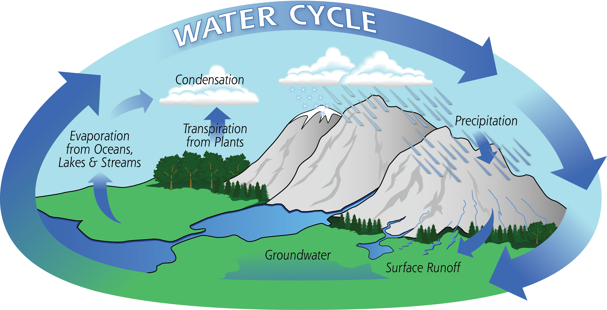

When forests are destroyed, the atmosphere, water bodies, and the water table are all affected. Trees absorb and retain water in their roots. A large part of the water that circulates in the ecosystem of rainforests remains inside the plants. Some of this moisture is transpired into the atmosphere. When this process is broken, the atmosphere and water bodies begin to dry out. The watershed potential is compromised and less water will run through the rivers. Smaller lakes and streams that take water from these larger water bodies dry up.
